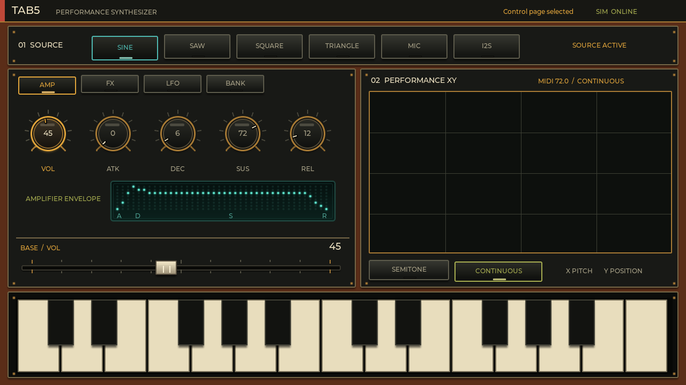
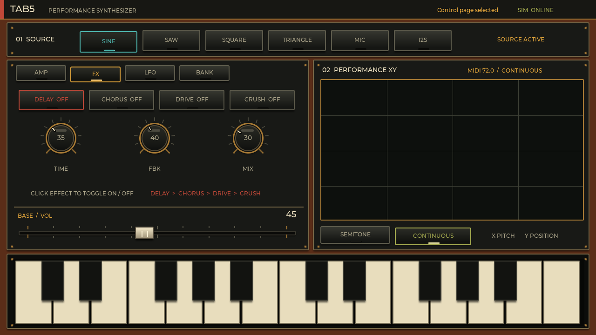
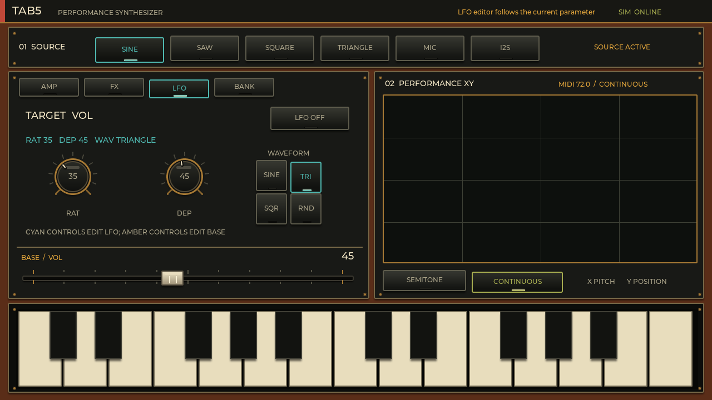
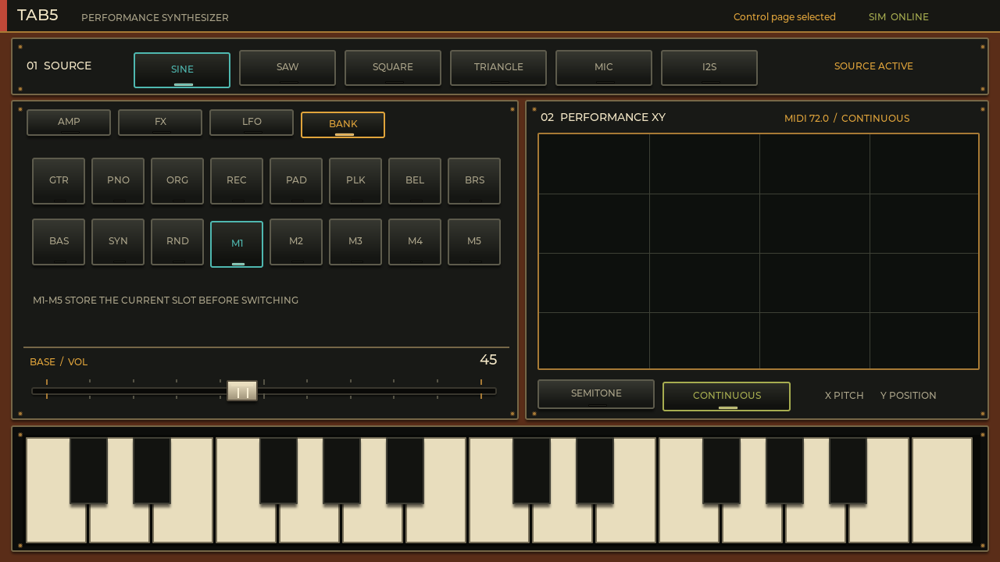

音源を選ぶ
まず SINE や SAW を押します。SAW は明るく倍音が多いので、フィルタのない現在の UI でも存在感のある音になります。
M5Stack Tab5 · Performance Synthesizer
Tab5 Synth は、オシレータ、マイク録音、外部 I2S 入力、ADSR、4 系統のエフェクト、パラメータ単位の LFO、プリセット、タッチ鍵盤を一画面にまとめた 8 ボイス・シンセサイザです。
操作の基本は「対象を選ぶ → 下の横フェーダーで値を変える → 鍵盤または XY パッドで鳴らす」です。
まず SINE や SAW を押します。SAW は明るく倍音が多いので、フィルタのない現在の UI でも存在感のある音になります。
AMP の VOL を選び、画面下の横フェーダーを上げます。
ATK / DEC / SUS / REL を調整します。中央のエンベロープ図が値に追従します。
下の鍵盤をタッチします。XY パッドでは X が音程、Y が演奏位置として使われます。
最上段で発音の元を選びます。ユーザーのいう “sing” は画面上では SINE（サイン波）です。SAW（ノコギリ波）を含む 4 波形に加え、録音とデジタル入力が使えます。
純粋で丸い音。サブベース、笛、柔らかいリードの出発点。
倍音が多く明るい音。ストリングス、ブラス、太いリード向け。
中空で電子的な音。8-bit 系、ベース、クラリネット風に有効。
SINE より少し倍音がある穏やかな音。ベルやソフトなベース向け。
押している間に録音し、離すとサンプル化。1 秒未満は破棄、最大 5 秒。
外部デジタル音声を音源として受信。現在の受信レートは 16 kHz。
MIC のコツ： MIC を 1 秒以上押し続け、録りたい音を入力してから離します。表示が MIC READY / SAMPLED / READY になれば演奏できます。Web シミュレータは UI 操作用で、実際の録音・音声出力は Tab5 実機で行います。
AMP は「どのくらい大きく」「鍵盤を押してから離すまで、音量がどう変化するか」を決めます。ノブを選択してから、共通フェーダーで 0–100 の値を設定します。

作例： パーカッシブな PLK は ATK を小さく、DEC を短く、SUS を低くします。PAD は ATK と REL を大きくすると、ゆっくり現れて余韻が残ります。
エフェクト名のボタンは、選択と ON/OFF を兼ねます。OFF にしてもパラメータは編集可能です。選んだエフェクトの 3 パラメータが中央に表示されます。

LFO は低周波の波でノブを自動的に揺らします。AMP と FX の 17 パラメータそれぞれに、独立した Rate / Depth / Wave / ON/OFF が保存されます。

AMP または FX で揺らしたいパラメータを選びます。例：音量なら VOL、ディレイ時間なら DELAY TIME。
LFO タブへ移動します。上部の TARGET が意図したパラメータか確認します。
RAT は速度、DEP は振れ幅。SINE / TRIANGLE / SQUARE / RND から波形を選びます。
LFO ON を押します。別の対象へ移ると、その対象専用の設定に切り替わります。
| 波形 | 動き | 使い方 |
|---|---|---|
| SINE | 丸く滑らかな往復 | ビブラート、ゆっくりした音量変化 |
| TRIANGLE | 一定速度で上下 | 機械的だが滑らかなスイープ |
| SQUARE | 2 値を瞬時に切替 | トレモロ、リズミックなゲート感 |
| RND | ランダムに変化 | 不規則な揺らぎ、実験的テクスチャ |
色の読み方： アンバー系は通常値（BASE）、シアン系は LFO 設定を示します。LFO 画面で共通フェーダーを動かすと、対象の元値ではなく選択中の LFO 値が変わります。
11 個の音色プリセットと 5 個の編集メモリがあります。プリセットは音作りの出発点、M1–M5 は現在の作業状態を切り替えながら保持するスロットです。

| ボタン | 意味 | 音色の目安 |
|---|---|---|
| GTR / PNO / ORG / REC | Guitar / Piano / Organ / Recorder | 弦、鍵盤、オルガン、笛系 |
| PAD / PLK / BEL | Pad / Pluck / Bell | 持続音、短い撥弦、ベル |
| BRS / BAS / SYN | Brass / Bass / Synth | ブラス、低音、強いシンセ音 |
| RND | Random | ソース、値、エフェクトを組み合わせた実験音色 |
| M1–M5 | Memory slots | スロット移動時に、離れる側の現在値を保存してから移動 |
画面右の XY パッドと、下部の 2 オクターブ鍵盤はどちらも発音に使えます。タッチを滑らせる演奏にも対応しています。
X 軸は MIDI 48–96 の音程です。SEMITONE は半音に量子化し、CONTINUOUS は連続音程になります。Y 軸は位置情報としてオーディオ側へ渡され、表現操作に利用されます。
白鍵と黒鍵を直接押します。スワイプすると、前のノートを離して次のノートへ移ります。最大 8 ボイスのため、和音も演奏できます。
下の画面は画像ではなく、リポジトリの UI ソースからビルドしたシミュレータです。音声は出ませんが、音源、各タブ、ノブ、フェーダー、鍵盤の操作を試せます。
ノブはドラッグ、下の横フェーダーはタップまたはドラッグできます。MIC / I2S と実音声処理は Tab5 実機で確認してください。